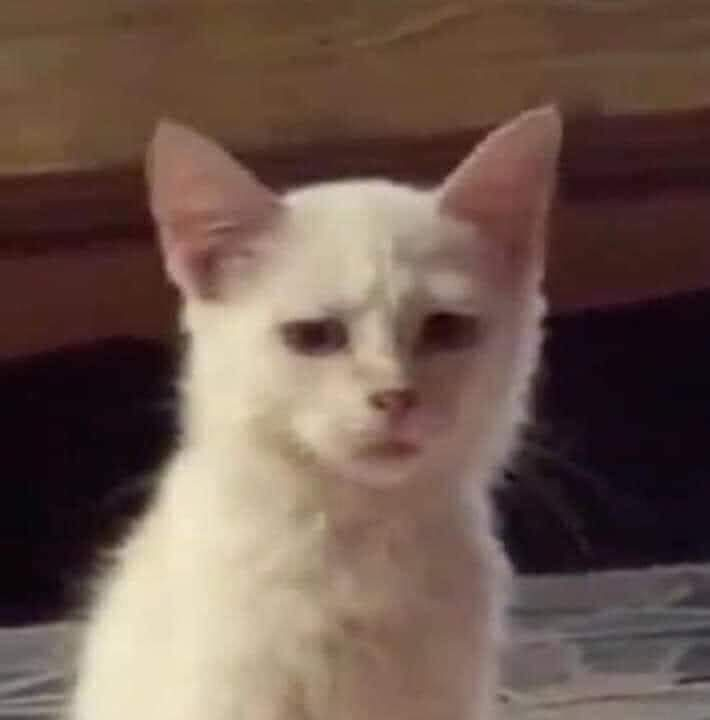

Hello! I am Lena, and I am passionate about eat and sleep. I enjoy spending time learning and exploring about the secret of the world, and this website is a reflection of what excites me. Whether it is working on my Data Science class or my love about technology. Feel free to explore my site to know more about me!
One more thing about me that is I love Cat! I wish I have one now!
Hello, and welcome to my photography website! I am Lena, an photographer who loves capturing the beauty of everyday moments. My photography journey began with capturing the morning sky at the beach. From landscape shots to candid portraits, I find joy in the little details. On this website, I will be sharing my work and discussing my creative process. I hope you enjoy browsing through my gallery as much as I enjoyed capturing these moments!
Why I Love Photography? Photography has always been a way for me to express my creativity and capture the beauty of everyday moments. I first became interested in photography when I had my first phone and I made out every first pictures. Whether I am shooting landscapes, portraits, or street scenes, photography allows me to freeze moments in time and share my unique perspective with others. What I love most about photography is the way it makes me look at the world differently. I pay attention to details I might otherwise miss—like the way light filters through trees during golden hour or the vibrant colors in a crowded market. Photography pushes me to explore new places and meet new people, expanding my understanding of the world. I also enjoy experimenting with different techniques, from macro photography, where I focus on tiny details, to dramatic black-and-white images that highlight contrast and emotion. Photography has become a form of storytelling for me, allowing me to communicate emotions and experiences without words. It is an ongoing journey of learning and discovery, and I look forward to continuing to grow as a photographer.
Email: tong.ng@northeastern.edu
Follow me on Instagram